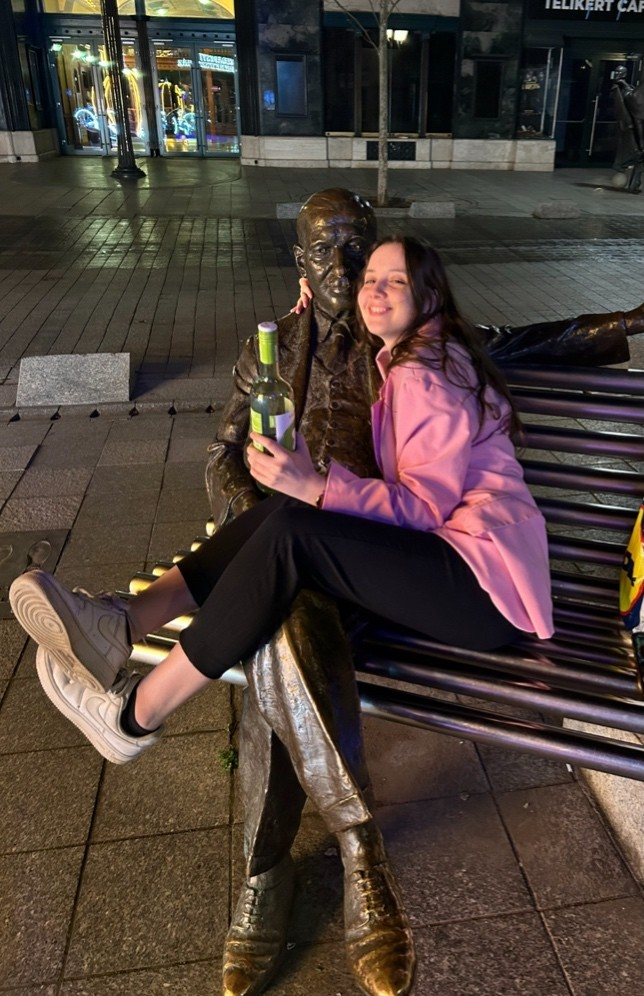

A belépéshez add meg a galaxis legpusztítóbb varázsigéjét.
A galaxis végtelen, de létezik egy szektor, ami minden másnál különlegesebb, a legfényesebb hullócsillagok sem érnek fel ehhez. Negyedszázad telt el, és ez a világ pontosan olyanná formálódott, amilyen te vagy.
Ez a kis virtuális holokron azért jött létre, hogy majd a szülinapozáson (IVÁS!) kívül egy másik módon is megünnepeljük azt a lányt, akinek galaxisa nélkül nem lenne teljes az univerzum. Azt az embert, akinek a lételeme a vita, és aki a vaksötét szobájában egy üveg Frittmannal a kezében, rezzenéstelen arccal nézi végig a bedőlt dél-amerikai foci vagy tenisz tipszmikszet.
Nem játszol szerepeket, képes vagy hajnalig vérre menő vitát folytatni, és a szókincsed egyik kedvenc - de legalábbis az egyik legtöbbször használt - szava az AFFUERA, ami felér egy harmadfoki, Kúria ítélettel.
Minden bolygó ebben a galaxisban egy-egy darabka a te zseniális “furcsaságaidból”. :)
Csak szállj be a Sólyomba, és fedezd fel a saját galaxisodat!
A galaxis végtelen, de létezik egy szektor, ami minden másnál különlegesebb, a legfényesebb hullócsillagok sem érnek fel ehhez. Negyedszázad telt el, és ez a világ pontosan olyanná formálódott, amilyen te vagy.
Ez a kis virtuális holokron azért jött létre, hogy majd a szülinapozáson (IVÁS!) kívül egy másik módon is megünnepeljük azt a lányt, akinek galaxisa nélkül nem lenne teljes az univerzum. Azt az embert, akinek a lételeme a vita, és aki a vaksötét szobájában egy üveg Frittmannal a kezében, rezzenéstelen arccal nézi végig a bedőlt dél-amerikai foci vagy tenisz tipszmikszet.
Nem játszol szerepeket, képes vagy hajnalig vérre menő vitát folytatni, és a szókincsed egyik kedvenc - de legalábbis az egyik legtöbbször használt - szava az AFFUERA, ami felér egy harmadfoki, Kúria ítélettel.
Minden bolygó ebben a galaxisban egy-egy darabka a te zseniális “furcsaságaidból”. :)
